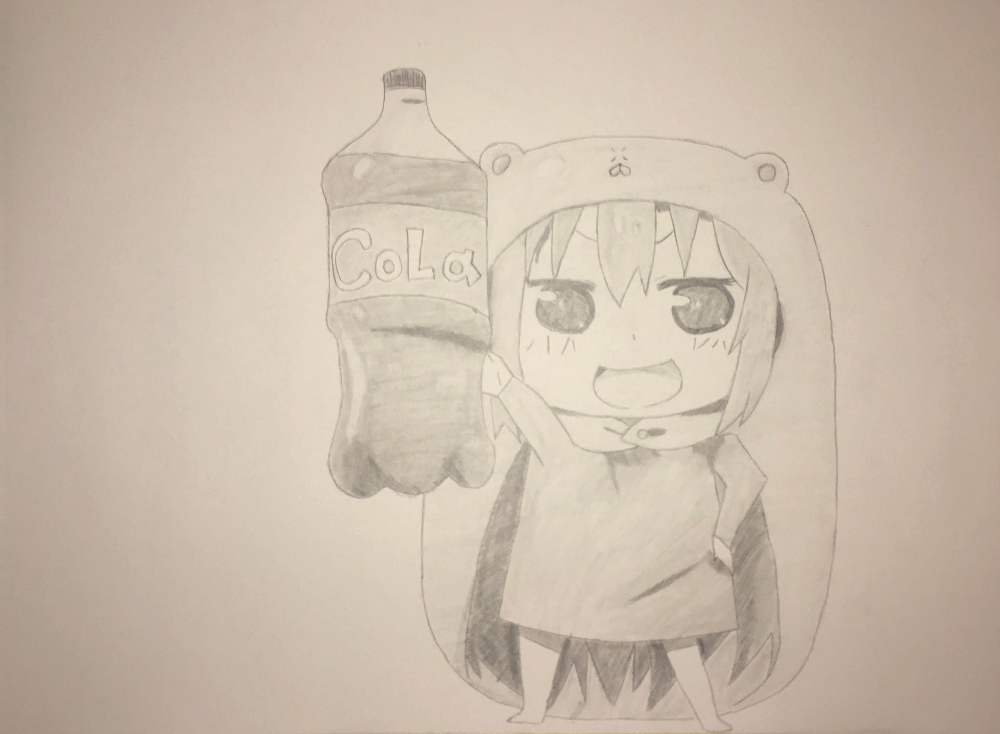

I really did not know what to draw for this assignment. When my professor said we can draw whatever we want, I was happy that I don't have to do realism. When I sat down with my drawing paper, I did not decided on what to draw until 20 minutes later. At first, I wanted to draw my character from the game I play, Love Nikki Dress Up Queen, but for some reason, I cannot draw small enough to have the full body. Instead, I settled with my favorite anime character, Umaru-Chan. I started off with a 2B pencil and traced it over with a 4B. I also used the 4B to create some shading. The blending stick was also used to blend in the shades to make it more smooth.